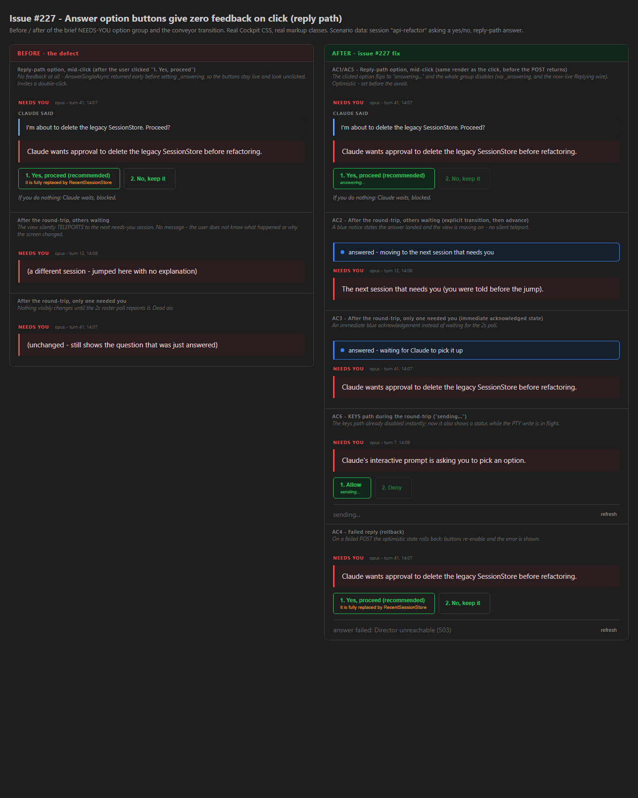

AnswerSingleAsync now sets the
optimistic answering state before the POST on both branches. The reply branch
previously returned early without setting _answering, so the most-used button in the
product looked ignored. A new _answeringSend field flips the clicked option to
answering... in the same render; the whole option group disables on
_answering || Replying. On a failed reply the state rolls back and the error shows.
The KEYS branch now surfaces sending... during its round-trip.QuickReplyAsync sets an
explicit _quickReplyNotice: "answered - moving to the next session that needs you"
when the conveyor advances (no more silent teleport), and "answered - waiting for Claude to pick
it up" when it was the only needs-you session (immediate acknowledgement instead of dead air
until the 2s poll). A blue notice banner renders above the brief; OnSelect clears any
stale notice on a manual selection..brief-quick-btn.answering /
.brief-answering-note (green option accent + pulse) and
.quick-reply-notice (blue informational banner using the existing --blue
token). No hard-coded one-off colors.Replying parameter (passed by the parent, used nowhere) is now LIVE: it
disables the reply-path option group during the parent's prompt POST. No dead wire remains.
| # | Criterion | How it is met | |
|---|---|---|---|
| 1 | Reply-path option shows answering... and the group disables in the same render, before the POST returns |
Reply branch sets _answering/_answeringSend/_answerStatus and renders (await InvokeAsync(StateHasChanged)) before OnQuickReply | PASS |
| 2 | Conveyor advance states it - no silent teleport | _quickReplyNotice = "answered - moving to the next session that needs you" stamped onto the advanced-to session | PASS |
| 3 | Only needs-you session: immediate acknowledged state | _quickReplyNotice = "answered - waiting for Claude to pick it up" set synchronously, no wait for the poll | PASS |
| 4 | Failed reply rolls back, error shown, buttons re-enable | Reply-branch catch resets _answering/_answeringSend and sets _answerStatus = "answer failed: ..." | PASS |
| 5 | Replying is used or removed - no dead parameter |
Now used: disabled="@(_answering || Replying)" on the reply-path option group (verified by grep) | PASS |
| 6 | KEYS path shows sending... during the round-trip |
Keys branch sets _answerStatus = "sending..." and renders before the PTY write | PASS |
| 7 | Before/after HTML mockup with real data committed; built UI matches it | before-after-mockup.html links the REAL app.css and uses the SAME markup classes the components emit | PASS |
src/CcDirector.Cockpit/wwwroot/app.css (copied verbatim into this
proof folder as app.css) and uses the same CSS classes the Razor components emit
(brief-quick-btn answering, brief-answering-note,
quick-reply-notice). What renders below is what the app renders.

security_profile.yaml rule
touched). No docs/cencon/ manifest update required.
dotnet build cc-director.sln
...
Build succeeded.
0 Warning(s)
0 Error(s)
Replying wire is now live, and the required before/after
mockup - rendered against the real shipped Cockpit stylesheet and markup classes - is committed and
matches the built UI.